Ненавижу!
7 причин
ненавидеть
Школу Дизайна

#шдхейтер
Перед поступлением вам приходилось изучать сайт Школы Дизайна. Наверняка вы уже оценили его с помощью своего дизайнерского взгляда, поэтому понимаете насколько он
ужасен!
Где
Стоит только взглянуть на меню. Кому пришло в голову сделать его таким понятным и четким?!
Всего в один клик ты можешь найти нужную информацию. Какое же это богохульство!
Где
Дизайн не соответствует стандартам университетских сайтов, на которых поиск занимает вечность!
Где
Цвета и шрифты можно пересчитать по пальцам. Как вы называете себя крутыми дизайнерами? Разве это творческий подход?
креатив?
Следующей веской причиной проклинать Школу является расписание. Какой здравомыслящий человек поставит пары с 10 утра, и к тому же (если не повезет) три выходных на неделе?! Мы—люди и должны работать с восходом солнца каждый божий день, вставать в 6 утра и идти покорять мир. Такое позднее начало учебного дня — это
контр продуктивно!
Whaaat?
Насчет предметов подойдет формулировка «туши свет, кидай гранату…».
Где моя родная высшая математика, наинтереснейшая культурология, оздоравливающая физическая культура, познавательная всеобщая история и другие не менее важные общеобразовательные предметы?!
Школа дизайна настолько
не ценит своих студентов,
что дает исключительно профильные предметы, которые пригодятся только в выбранной профессиональной деятельности.
Во время каждого вашего обеда вышкинская столовая будет заставлять вас страдать! Страдать от выбора еды, которую вы хотите взять сегодня. 20 вариаций блюда – это не два… Ну камон… И так каждый день! В таком темпе мозг рискует потерять все свои ресурсы уже через несколько дней.
suffer
Преподаватели в школе все как один. Они настолько интересно рассказывают, что
не дают спокойно поспать.
Вот как человеку, привыкшему слушать прекрасную колыбельную учителя, заснуть во время такого информативного и увлекательного выступления?
Первый раз увидев кабинет с маками, я подумал: «О, окей, есть где работать…». Но когда узнал, что практически все кабинеты оснащены таким же оборудованием, возникли две мысли
Первая касается царящей в школе
дискриминации
по ОС признаку.
Вторая – «Если у всех будут удобные, быстродействующие устройства, кто же тогда будет страдать?» Хотите чтобы в мире наступила
анархия?!
Вышка бессовестно продолжает игнорировать стандарты других Вузов страны, поэтому оценки вы сможете посмотреть только на экране любого устройства.
что
В таком случае студенты совсем утратят эмпирические данные запаха бумаги…
дальше?
.. ...абсурд!